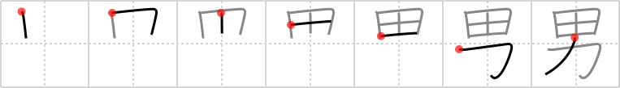

男
← →
man

Reading:
On-Yomi: ダン、ナン — Kun-Yomi: おとこ、お
Heisig story:
Rice fields . . . power. This character is the gender-specific man, not the generic human person of frame 951.
Koohii stories:
1) [fuaburisu] 10-10-2005(212): Male is seen here as muscles working in the field, in other words working in the rice fields is the work of the male who are usually stronger. This is more or less the meaning of the original Chinese character.
2) [Callooh] 3-9-2007(107): When it comes to choosing a MAN, I prefer brains over muscles.
3) [phauna] 7-2-2008(39): Men have brains and muscles. And, er, women don't.
4) [sethg] 29-3-2009(12): A man should value his brains over his muscles.
5) [andresito] 10-5-2009(7): Male have more power to work the rice field.